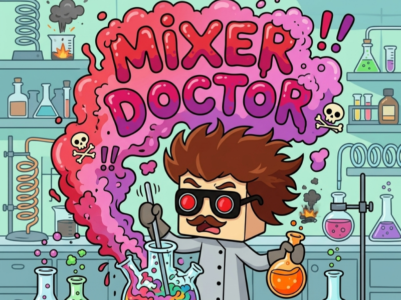
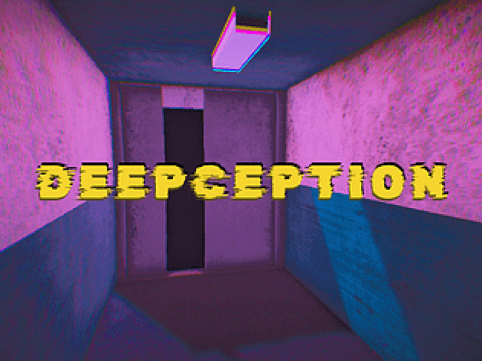
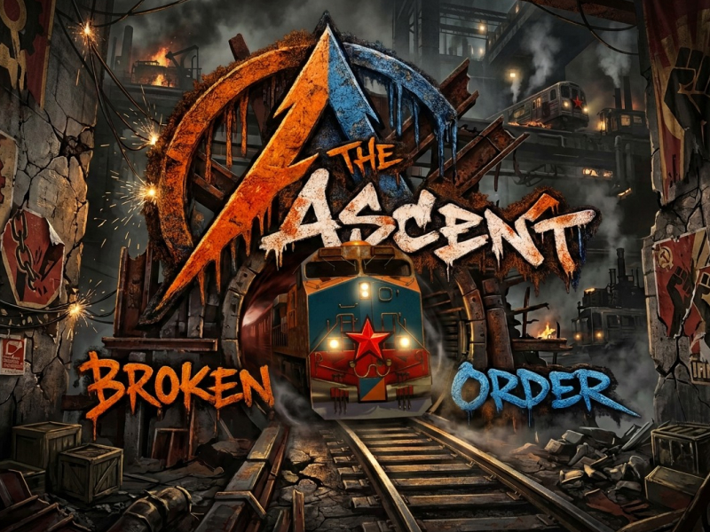

DISEÑADORA GRÁFICA & GAME DEVELOPER
Diseño experiencias que enganchan y cuentan historias.
Hola, soy Cindy Galindo. Diseñadora gráfica y desarrolladora de videojuegos apasionada por crear mundos jugables con identidad visual propia.
Soy diseñadora gráfica especializada en UX/UI y enfocada en el desarrollo de experiencias visuales para videojuegos. Combino conocimientos en diseño de interfaces, diseño visual, ilustración, Unity y Game Testing (QA) para desarrollar soluciones funcionales y atractivas que contribuyan a una experiencia de juego coherente y de calidad. Mi experiencia en diseño me permite transformar conceptos en elementos visuales, mientras que mis conocimientos técnicos en desarrollo y testing me ayudan a comprender el producto de forma integral y colaborar eficazmente con equipos multidisciplinarios.

Mixer Doctor es un juego 2D de supervivencia basado en la experimentación con diferentes combinaciones de químicos. Desarrollado durante una Game Jam, con participación en UI Design, diseño visual y creación de assets 2D.

DEEPCEPTION es un juego 3D de ficción interactiva en el que el jugador desciende por un edificio piso por piso mientras intenta cumplir una misión que, poco a poco, revela una realidad muy diferente a la que percibe. Desarrollado durante la Deeper & Deeper Game Jam.

The Ascent: Broken Order es un juego 3D de acción y exploración con cámara Top-Down, ambientado en un enorme tren dividido por clases sociales. El jugador debe ascender desde los niveles inferiores, enfrentando enemigos y explorando diferentes vagones hasta llegar a las zonas de la élite. El proyecto fue desarrollado en equipo como proyecto final de un bootcamp.